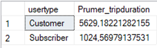

Datová analýza
PowerBI a SQL Server Management Studio
Jedná se o projekt, který se zpracovával v posledním ročníku vysoké školy. Jednalo se o týmovou práci, ale předvedu zde zejména to, co jsem měl za úkol zpracovat já sám. Projekt spočívá v analýze společnosti, která půjčuje jízdní kola na různé trasy.
Má část práce se týkala zejména analýzou jednotlivých provedených tras, ale přispíval jsem i u jiných analýz (jako například využitím jednotlivých kol nebo analýzou zákazníků apod.). Jednotliví zákazníci byli rozděleni do dvou skupin (Customer a Subscriber). Nejprve jsem tedy provedl skrze SSIS (SQL Server Integration Services) - možno vidět na obrázku nahoře - shrnutí průměru doby jízdy pro jednotlivé skupiny zákazníků. A dále jsem extrahoval dle pohlaví takové zákazníky, kteří mají delší dobu jízdy než je daný průměr.
Vlevo na obrázku je možné vidět dané rozdělení na costumery a subscribery a poté právě průměrnou dobu jízdy v sekundách u jednotlivých skupin. Toto je získáno pomocí jednoduchého SQL dotazu v Microsoft SQL Server Management Studiu. Je z toho možné usoudit, že customers jezdí většinou delší dobu, kdežto zákazníci, kteří si platí předplatná, tak jezdí průměrně kratší jízdy. Takováto data by mohly být důležité a použitelné pro marketing i management. Plánování reklam apod.
 V pravo na obrázku se objevuje rozdělení subscriberů, kteří mají vyšší dobu tripu než je daný průměr pro subscribery. Uvádím zde rozdělení, kdy 0 značí nevyplněné pohlaví, 1 značí muže a 2 ženy. Dále uvádím počty jednotlivců pro jednotlivé gendery, z čehož plyne, že muži jezdí na kole více než ženy. Dále jsem také uvedl průměrný rok narození pro jednotlivé skupiny. Tato data jsou opět získána poměrně jednoduchým SQL dotazem. Takováto data jsou využitelná pro informovanost podniku o tom, kdo využívá kola déle nežli je průměrná doba jedné jízdy, což může být využitelné opět pro marketing nebo jiné firemní záležitosti. To stejné bylo utvořeno pro customery samozřejmě.
V pravo na obrázku se objevuje rozdělení subscriberů, kteří mají vyšší dobu tripu než je daný průměr pro subscribery. Uvádím zde rozdělení, kdy 0 značí nevyplněné pohlaví, 1 značí muže a 2 ženy. Dále uvádím počty jednotlivců pro jednotlivé gendery, z čehož plyne, že muži jezdí na kole více než ženy. Dále jsem také uvedl průměrný rok narození pro jednotlivé skupiny. Tato data jsou opět získána poměrně jednoduchým SQL dotazem. Takováto data jsou využitelná pro informovanost podniku o tom, kdo využívá kola déle nežli je průměrná doba jedné jízdy, což může být využitelné opět pro marketing nebo jiné firemní záležitosti. To stejné bylo utvořeno pro customery samozřejmě.
Dále jsem již provedl analýzu jednotlivých tras - což znamená spojení mezi začáteční a koncovou stanicí. Tímto provedením si odpovídáme zejména na dvě otázky:
- Které trasy mají rozdíl maximální a minimální doby jízdy vyšší než 3 hodiny?
Takovéto informace nám mohou pomoci odhalit, na kterých trasách se využívají kola více nežli by měla anebo různé chyby v systému, případně ukradená kola - jelikož pokud je rozdíl mezi maximální a minimální dobou jízdy vyšší než tři hodiny, tak by zkrátka mohlo být něco špatně
- Které trasy proběhly více než jednou a mají součet časů všech jízd vyšší než jeden týden?
Toto nám může říct ty nejoblíbenější trasy - neboli tedy takové trasy, které jsou nejfrekventovanější nebo mají větší délku. To by mohlo pomoci se zacílením reklamy, přidáním reklamy na danou trasu, zavedení různých spoluprací s okolními podniky (například fast foody), které jsou po stejné trase apod.

Nakonec jsem uvedl i několik výstupů za pomocí aplikace PowerBI, kde se dají skvěle tvořit vizualizace dat. Nejprve jsem graficky zpracoval počet jízd v jednotlivých čtvrtletích. Dále také jsem procentuálně vyjádřil počet tras, kde je provedených tras více než 3000 za celé období. Dále jsem uvedl průměrný rok narození uživatelů podle toho, jakou cestou jezdí. A také jsem vypsal jednotlivě počty tras mezi jednotlivými začátečními a koncovými stanicemi.